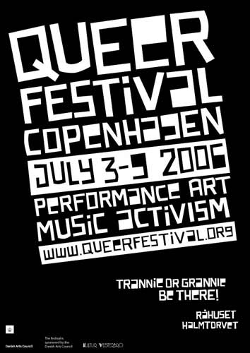

| Queer Festival | 3. - 9. Juli - 2006 |
|
 Download this poster as PDF |
|
| dunst har taget initiativ til at lave en Queer Festival. Vi har vi har brug for alle de aktivister som vi kan få til at hjælpe os med praktiske ting. Vil du give en hånd med så send os en mail på info@queerfestival.org Find info om arranementet på www.queerfestival.org Sponsered by the Danish Arts Council. |
|